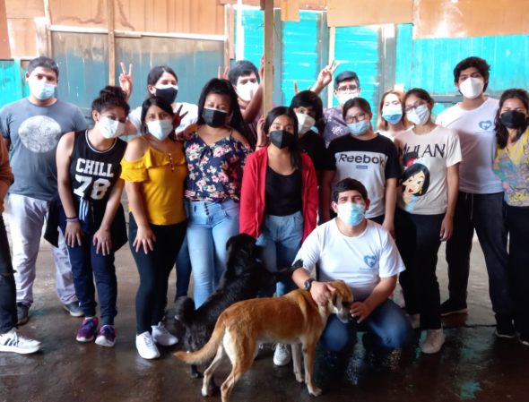
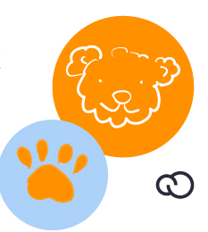
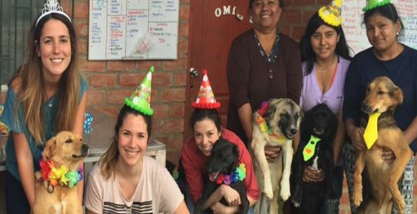

<main>

    <section>
         <div class="aboutUs">
            <div class="card mb-3" >
                <div class="row g-0">
                  <div class="col-md-4">
                    
                  </div>
                  <div class="col-md-8">
                    <div class="card-body">
                      <h5 class="card-title">Quienes somos?</h5>
                      <p class="card-text">
                        Adóptame nace de la convicción de que para efectuar una transformación real, es esencial comprometerse de forma directa.

                        Somos un equipo de personas impulsadas por la empatía hacia los animales, reconociéndolos como nuestros semejantes debido a su capacidad para experimentar placer, alegría, dolor y sufrimiento.
                        
                        Nuestra misión consiste en inspirar un cambio de mentalidad que repercuta positivamente en la crítica situación que enfrentamos, vinculada a la sobrepoblación, el abandono, la crueldad y la indiferencia que afectan a millones de perros y gatos en nuestro país.
                      </p>
                    
                    </div>
                  </div>
                </div>
              </div>
         </div>

         <div class="aboutUs">
            <div class="card mb-3" >
                <div class="row g-0">
                  <div class="col-md-4">
                    
                  </div>
                  <div class="col-md-8">
                    <div class="card-body">
                      <h5 class="card-title">Un poco de nuestra historia...</h5>
                      <p class="card-text">
                        Nuestra misión es simple pero poderosa: conectar a los animales necesitados con hogares amorosos. 
                        Creemos en la adopción como la mejor opción y trabajamos incansablemente para sensibilizar a las personas 
                        sobre la importancia de darles una segunda oportunidad a los animales de refugios. 
                        Al unir fuerzas con amantes de los animales de todo el mundo, estamos construyendo un futuro 
                        donde cada mascota tenga un hogar cálido y amoroso. <br>
                        Estamos en una búsqueda apasionada para transformar la vida de animales abandonados y maltratados. 
                        Nuestra misión es clara: rescatar, rehabilitar y encontrar hogares amorosos para cada ser vulnerable. 
                        Creemos en la empatía, la compasión y la responsabilidad compartida hacia nuestros amigos peludos. 
                        Juntos, podemos construir un mundo donde cada cola encuentre su final feliz.
                      </p>
                    
                    </div>
                  </div>
                </div>
              </div>
         </div>

         <div class="aboutUs">
            <div class="card mb-3" >
                <div class="row g-0">
                  <div class="col-md-4">
                    
                  </div>
                  <div class="col-md-8">
                    <div class="card-body">
                      <h5 class="card-title">Cómo desarrollamos nuestras actividades?</h5>
                      <p class="card-text">
                        ACCIÓN DIRECTA: Intervenimos directamente en la asistencia a animales abandonados 
                        en situaciones críticas, proporcionándoles atención médica y fomentando su adopción posterior 
                        por parte de hogares responsables.<br><br>

                        ACCIONES EDUCATIVAS: Impartimos charlas, talleres, campañas de bien público y eventos 
                        con el propósito de concientizar sobre temas cruciales como la sobrepoblación animal, 
                        la importancia de la castración, la venta de animales y la adopción, la crueldad y el maltrato, 
                        el cuidado responsable, la ética animal, entre otros. <br><br>

                        ACCIONES SOLIDARIAS: Establecemos colaboraciones estrechas con entidades de bien público, 
                        organizaciones y activistas que comparten nuestros objetivos, 
                        fortaleciendo la red de apoyo y compromiso hacia la causa animal. <br><br>

                      </p>
                    
                    </div>
                  </div>
                </div>
              </div>
         </div>

         <div class="phrase">
             <h3>
              Todo lo que hemos realizado es gracias a todos nuestros voluntarios, padrinos y refugios que se fueron sumando ....!!! <br>
              SUMATE A ESTA GRAN FAMILIA, TE ESPERAMOS...!!
             </h3>
         </div>

    </section>
</main>
